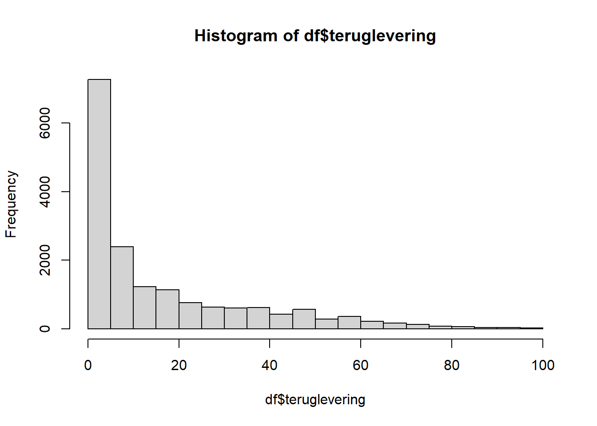
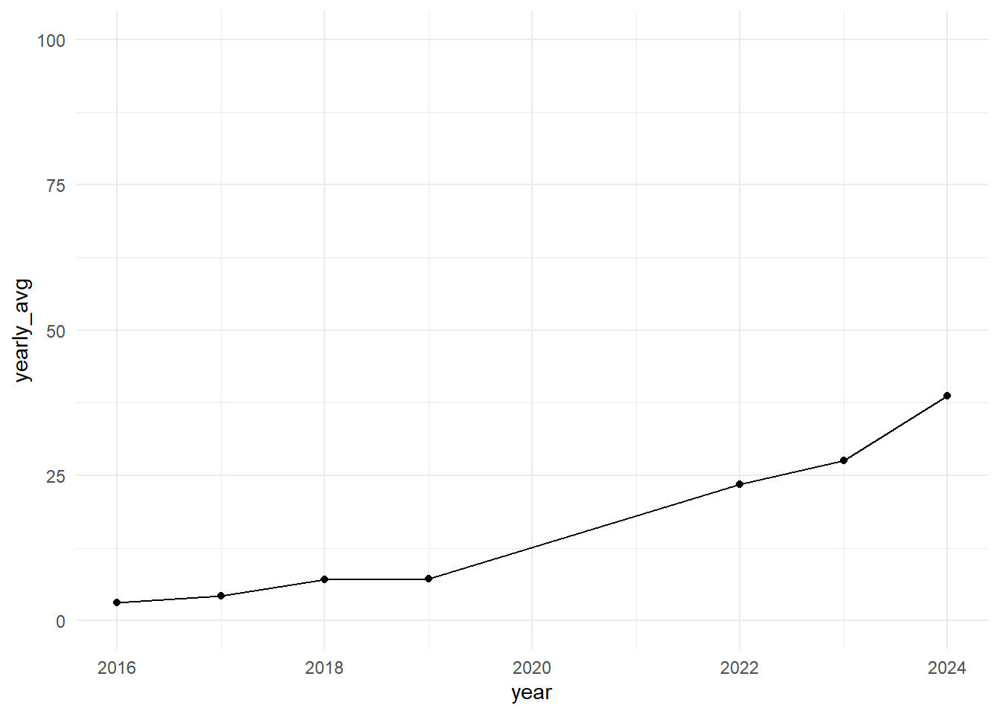
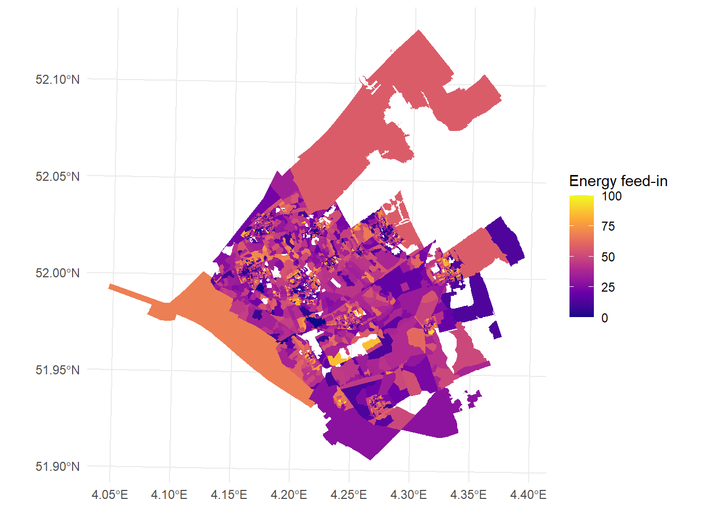
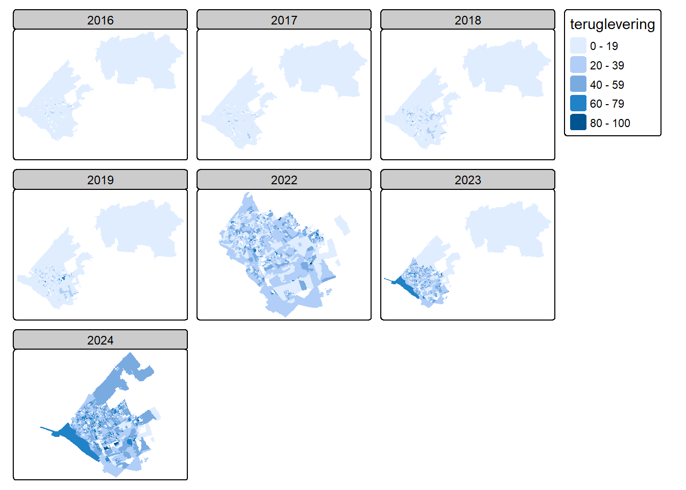
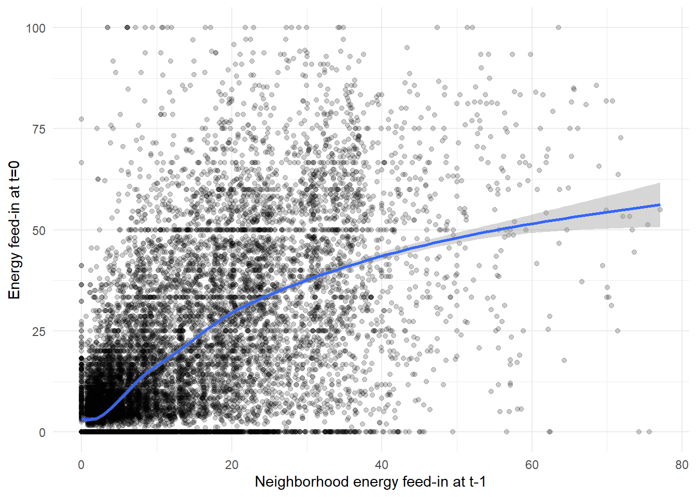

rm(list=ls())
library(tidyverse)## ── Attaching core tidyverse packages ───────────── tidyverse 2.0.0 ──
## ✔ dplyr 1.1.4 ✔ readr 2.1.5
## ✔ forcats 1.0.0 ✔ stringr 1.5.1
## ✔ ggplot2 4.0.0 ✔ tibble 3.3.0
## ✔ lubridate 1.9.4 ✔ tidyr 1.3.1
## ✔ purrr 1.1.0
## ── Conflicts ─────────────────────────────── tidyverse_conflicts() ──
## ✖ dplyr::filter() masks stats::filter()
## ✖ dplyr::lag() masks stats::lag()
## ℹ Use the conflicted package (<http://conflicted.r-lib.org/>) to force all conflicts to become errorslibrary(sf)## Warning: package 'sf' was built under R version 4.5.2## Linking to GEOS 3.13.1, GDAL 3.11.4, PROJ 9.7.0; sf_use_s2() is TRUElibrary(tmap)## Warning: package 'tmap' was built under R version 4.5.2library(spdep)## Warning: package 'spdep' was built under R version 4.5.2## Loading required package: spData## Warning: package 'spData' was built under R version 4.5.2## To access larger datasets in this package, install the spDataLarge
## package with: `install.packages('spDataLarge',
## repos='https://nowosad.github.io/drat/', type='source')`library(lme4)## Warning: package 'lme4' was built under R version 4.5.2## Loading required package: Matrix
##
## Attaching package: 'Matrix'
##
## The following objects are masked from 'package:tidyr':
##
## expand, pack, unpacklibrary(lmerTest)## Warning: package 'lmerTest' was built under R version 4.5.3##
## Attaching package: 'lmerTest'
##
## The following object is masked from 'package:lme4':
##
## lmer
##
## The following object is masked from 'package:stats':
##
## stepdf <- st_read("./data/df_analysis.gpkg")## Reading layer `df_analysis' from data source
## `C:\Users\kalle\OneDrive\Documenten\REMA\Thesis\labjournal_thesis_KS\labjournal_thesis_KS\data\df_analysis.gpkg'
## using driver `GPKG'
## Simple feature collection with 17085 features and 34 fields
## Geometry type: MULTIPOLYGON
## Dimension: XY
## Bounding box: xmin: 62856.61 ymin: 430398.8 xmax: 119527.1 ymax: 471972.6
## Projected CRS: Amersfoort / RD Newhist(df$teruglevering)
df |>
group_by(year) |>
summarise(yearly_avg = mean(teruglevering, na.rm = TRUE)) |>
ggplot(aes(x = year, y = yearly_avg)) +
geom_line() +
geom_point() +
scale_y_continuous(limits = c(0, 100)) +
scale_x_continuous(breaks = seq(min(df$year), max(df$year), by = 2))+
theme_minimal()
On a map, using ggplot:
df |>
filter(year == 2024) |>
ggplot(
aes(fill = teruglevering)
) +
geom_sf(color = NA) +
scale_fill_viridis_c(option = "plasma", name = "Energy feed-in") +
theme_minimal()
Using tmap
tmap_mode("plot")## ℹ tmap modes "plot" - "view"
## ℹ toggle with `tmap::ttm()`tm_shape(df) +
tm_fill("teruglevering") +
tm_facets(by = "year")
Calculate spatial autocorrelation over time
years <- c(2016:2019, 2022:2024)
moran_results_list <- list()
for (yr in years) {
# Filter for the specific year
df_yr <- df |> filter(year == yr)
# Create neighbor list
nb <- poly2nb(df_yr)
# Create weights list
lw <- nb2listw(nb, style = "W", zero.policy = TRUE)
# Run Moran's I test and store it in the list using the year as the name
moran_results_list[[as.character(yr)]] <- moran.test(df_yr$teruglevering,
lw,
zero.policy = TRUE)
}## Warning in poly2nb(df_yr): some observations have no neighbours;
## if this seems unexpected, try increasing the snap argument.## Warning in poly2nb(df_yr): neighbour object has 6 sub-graphs;
## if this sub-graph count seems unexpected, try increasing the snap argument.## Warning in poly2nb(df_yr): some observations have no neighbours;
## if this seems unexpected, try increasing the snap argument.## Warning in poly2nb(df_yr): neighbour object has 3 sub-graphs;
## if this sub-graph count seems unexpected, try increasing the snap argument.## Warning in poly2nb(df_yr): some observations have no neighbours;
## if this seems unexpected, try increasing the snap argument.## Warning in poly2nb(df_yr): neighbour object has 3 sub-graphs;
## if this sub-graph count seems unexpected, try increasing the snap argument.## Warning in poly2nb(df_yr): some observations have no neighbours;
## if this seems unexpected, try increasing the snap argument.## Warning in poly2nb(df_yr): neighbour object has 2 sub-graphs;
## if this sub-graph count seems unexpected, try increasing the snap argument.str(moran_results_list)## List of 7
## $ 2016:List of 6
## ..$ statistic : Named num 20.4
## .. ..- attr(*, "names")= chr "Moran I statistic standard deviate"
## ..$ p.value : num 7.04e-93
## ..$ estimate : Named num [1:3] 0.229432 -0.000426 0.000127
## .. ..- attr(*, "names")= chr [1:3] "Moran I statistic" "Expectation" "Variance"
## ..$ alternative: chr "greater"
## ..$ method : chr "Moran I test under randomisation"
## ..$ data.name : chr "df_yr$teruglevering \nweights: lw \n"
## ..- attr(*, "class")= chr "htest"
## $ 2017:List of 6
## ..$ statistic : Named num 20.3
## .. ..- attr(*, "names")= chr "Moran I statistic standard deviate"
## ..$ p.value : num 1.5e-91
## ..$ estimate : Named num [1:3] 0.226956 -0.000421 0.000126
## .. ..- attr(*, "names")= chr [1:3] "Moran I statistic" "Expectation" "Variance"
## ..$ alternative: chr "greater"
## ..$ method : chr "Moran I test under randomisation"
## ..$ data.name : chr "df_yr$teruglevering \nweights: lw \n"
## ..- attr(*, "class")= chr "htest"
## $ 2018:List of 6
## ..$ statistic : Named num 23.7
## .. ..- attr(*, "names")= chr "Moran I statistic standard deviate"
## ..$ p.value : num 3.87e-124
## ..$ estimate : Named num [1:3] 0.265515 -0.000416 0.000126
## .. ..- attr(*, "names")= chr [1:3] "Moran I statistic" "Expectation" "Variance"
## ..$ alternative: chr "greater"
## ..$ method : chr "Moran I test under randomisation"
## ..$ data.name : chr "df_yr$teruglevering \nweights: lw \n"
## ..- attr(*, "class")= chr "htest"
## $ 2019:List of 6
## ..$ statistic : Named num 23.2
## .. ..- attr(*, "names")= chr "Moran I statistic standard deviate"
## ..$ p.value : num 7.15e-119
## ..$ estimate : Named num [1:3] 0.258014 -0.000413 0.000125
## .. ..- attr(*, "names")= chr [1:3] "Moran I statistic" "Expectation" "Variance"
## ..$ alternative: chr "greater"
## ..$ method : chr "Moran I test under randomisation"
## ..$ data.name : chr "df_yr$teruglevering \nweights: lw \nn reduced by no-neighbour observations \n"
## ..- attr(*, "class")= chr "htest"
## $ 2022:List of 6
## ..$ statistic : Named num 26.4
## .. ..- attr(*, "names")= chr "Moran I statistic standard deviate"
## ..$ p.value : num 1.68e-153
## ..$ estimate : Named num [1:3] 0.293889 -0.0004 0.000125
## .. ..- attr(*, "names")= chr [1:3] "Moran I statistic" "Expectation" "Variance"
## ..$ alternative: chr "greater"
## ..$ method : chr "Moran I test under randomisation"
## ..$ data.name : chr "df_yr$teruglevering \nweights: lw \nn reduced by no-neighbour observations \n"
## ..- attr(*, "class")= chr "htest"
## $ 2023:List of 6
## ..$ statistic : Named num 26.1
## .. ..- attr(*, "names")= chr "Moran I statistic standard deviate"
## ..$ p.value : num 3.28e-150
## ..$ estimate : Named num [1:3] 0.289913 -0.0004 0.000124
## .. ..- attr(*, "names")= chr [1:3] "Moran I statistic" "Expectation" "Variance"
## ..$ alternative: chr "greater"
## ..$ method : chr "Moran I test under randomisation"
## ..$ data.name : chr "df_yr$teruglevering \nweights: lw \nn reduced by no-neighbour observations \n"
## ..- attr(*, "class")= chr "htest"
## $ 2024:List of 6
## ..$ statistic : Named num 26.8
## .. ..- attr(*, "names")= chr "Moran I statistic standard deviate"
## ..$ p.value : num 6.42e-159
## ..$ estimate : Named num [1:3] 0.298857 -0.000398 0.000124
## .. ..- attr(*, "names")= chr [1:3] "Moran I statistic" "Expectation" "Variance"
## ..$ alternative: chr "greater"
## ..$ method : chr "Moran I test under randomisation"
## ..$ data.name : chr "df_yr$teruglevering \nweights: lw \nn reduced by no-neighbour observations \n"
## ..- attr(*, "class")= chr "htest"Bivariate plot
df |>
ggplot(aes(x = nb_pv, y = teruglevering)) +
geom_point(alpha = 0.2) +
geom_smooth() +
theme_minimal() +
xlab("Neighborhood energy feed-in at t-1") +
ylab("Energy feed-in at t=0")## `geom_smooth()` using method = 'gam' and formula = 'y ~ s(x, bs =
## "cs")'## Warning: Removed 1112 rows containing non-finite outside the scale range
## (`stat_smooth()`).## Warning: Removed 1112 rows containing missing values or values outside the
## scale range (`geom_point()`).
#null-model, ICC = 34.7%.
model0 <- lmer(teruglevering ~ (1 | postcode_van), REML = F, data = df)
summary(model0)## Linear mixed model fit by maximum likelihood . t-tests use Satterthwaite's
## method [lmerModLmerTest]
## Formula: teruglevering ~ (1 | postcode_van)
## Data: df
##
## AIC BIC logLik -2*log(L) df.resid
## 148756.8 148780.0 -74375.4 148750.8 17082
##
## Scaled residuals:
## Min 1Q Median 3Q Max
## -3.0143 -0.6358 -0.2172 0.5246 4.8492
##
## Random effects:
## Groups Name Variance Std.Dev.
## postcode_van (Intercept) 149.9 12.24
## Residual 282.3 16.80
## Number of obs: 17085, groups: postcode_van, 2595
##
## Fixed effects:
## Estimate Std. Error df t value Pr(>|t|)
## (Intercept) 16.8393 0.2743 2290.3020 61.39 <2e-16 ***
## ---
## Signif. codes: 0 '***' 0.001 '**' 0.01 '*' 0.05 '.' 0.1 ' ' 1149.9 / (149.9 + 282.3)## [1] 0.3468302#model1 with random interept and fixed effect of time
model1 <- lmer(teruglevering ~ (1 | postcode_van) + year, REML = F, data = df)
summary(model1)## Linear mixed model fit by maximum likelihood . t-tests use Satterthwaite's
## method [lmerModLmerTest]
## Formula: teruglevering ~ (1 | postcode_van) + year
## Data: df
##
## AIC BIC logLik -2*log(L) df.resid
## 135386.9 135417.9 -67689.5 135378.9 17081
##
## Scaled residuals:
## Min 1Q Median 3Q Max
## -4.1183 -0.6288 -0.0281 0.5679 6.0487
##
## Random effects:
## Groups Name Variance Std.Dev.
## postcode_van (Intercept) 161.8 12.72
## Residual 113.8 10.67
## Number of obs: 17085, groups: postcode_van, 2595
##
## Fixed effects:
## Estimate Std. Error df t value Pr(>|t|)
## (Intercept) -8.441e+03 5.764e+01 1.455e+04 -146.5 <2e-16 ***
## year 4.187e+00 2.853e-02 1.455e+04 146.8 <2e-16 ***
## ---
## Signif. codes: 0 '***' 0.001 '**' 0.01 '*' 0.05 '.' 0.1 ' ' 1
##
## Correlation of Fixed Effects:
## (Intr)
## year -1.000#model2 with random effect of time does not coverge
#model3 with random intercept and fixed effect of time and nb_pv
model3 <- lmer(teruglevering ~ (1 | postcode_van) + year + nb_pv, REML = F, data = df)
summary(model3)## Linear mixed model fit by maximum likelihood . t-tests use Satterthwaite's
## method [lmerModLmerTest]
## Formula: teruglevering ~ (1 | postcode_van) + year + nb_pv
## Data: df
##
## AIC BIC logLik -2*log(L) df.resid
## 125566.0 125604.4 -62778.0 125556.0 15968
##
## Scaled residuals:
## Min 1Q Median 3Q Max
## -3.7748 -0.5955 -0.0218 0.5488 6.2366
##
## Random effects:
## Groups Name Variance Std.Dev.
## postcode_van (Intercept) 138.8 11.78
## Residual 108.2 10.40
## Number of obs: 15973, groups: postcode_van, 2456
##
## Fixed effects:
## Estimate Std. Error df t value Pr(>|t|)
## (Intercept) -4.765e+03 1.082e+02 1.575e+04 -44.03 <2e-16 ***
## year 2.363e+00 5.365e-02 1.575e+04 44.05 <2e-16 ***
## nb_pv 6.138e-01 1.521e-02 1.594e+04 40.35 <2e-16 ***
## ---
## Signif. codes: 0 '***' 0.001 '**' 0.01 '*' 0.05 '.' 0.1 ' ' 1
##
## Correlation of Fixed Effects:
## (Intr) year
## year -1.000
## nb_pv 0.843 -0.844#model4
model4 <- lmer(teruglevering ~ (1 + nb_pv | postcode_van) + year + nb_pv, REML = F, data = df)
summary(model4)## Linear mixed model fit by maximum likelihood . t-tests use Satterthwaite's
## method [lmerModLmerTest]
## Formula: teruglevering ~ (1 + nb_pv | postcode_van) + year + nb_pv
## Data: df
##
## AIC BIC logLik -2*log(L) df.resid
## 118394.3 118448.1 -59190.2 118380.3 15966
##
## Scaled residuals:
## Min 1Q Median 3Q Max
## -5.6526 -0.4405 -0.0281 0.3729 6.5901
##
## Random effects:
## Groups Name Variance Std.Dev. Corr
## postcode_van (Intercept) 58.845 7.6711
## nb_pv 0.752 0.8672 0.04
## Residual 49.025 7.0018
## Number of obs: 15973, groups: postcode_van, 2456
##
## Fixed effects:
## Estimate Std. Error df t value Pr(>|t|)
## (Intercept) -4.449e+03 9.590e+01 1.397e+04 -46.39 <2e-16 ***
## year 2.207e+00 4.755e-02 1.397e+04 46.41 <2e-16 ***
## nb_pv 6.743e-01 2.422e-02 4.229e+03 27.84 <2e-16 ***
## ---
## Signif. codes: 0 '***' 0.001 '**' 0.01 '*' 0.05 '.' 0.1 ' ' 1
##
## Correlation of Fixed Effects:
## (Intr) year
## year -1.000
## nb_pv 0.614 -0.615#model4_2
df <- df |>
mutate(nb_pv_sq = nb_pv^2)
model4_2 <- lmer(teruglevering ~ (1 + nb_pv | postcode_van) + year + nb_pv + nb_pv_sq, REML = F, data = df)
summary(model4_2)## Linear mixed model fit by maximum likelihood . t-tests use Satterthwaite's
## method [lmerModLmerTest]
## Formula: teruglevering ~ (1 + nb_pv | postcode_van) + year + nb_pv + nb_pv_sq
## Data: df
##
## AIC BIC logLik -2*log(L) df.resid
## 118396.3 118457.7 -59190.1 118380.3 15965
##
## Scaled residuals:
## Min 1Q Median 3Q Max
## -5.6534 -0.4401 -0.0281 0.3732 6.5899
##
## Random effects:
## Groups Name Variance Std.Dev. Corr
## postcode_van (Intercept) 58.7585 7.665
## nb_pv 0.7517 0.867 0.04
## Residual 49.0378 7.003
## Number of obs: 15973, groups: postcode_van, 2456
##
## Fixed effects:
## Estimate Std. Error df t value Pr(>|t|)
## (Intercept) -4.438e+03 1.028e+02 1.458e+04 -43.175 <2e-16 ***
## year 2.201e+00 5.098e-02 1.458e+04 43.179 <2e-16 ***
## nb_pv 6.817e-01 3.488e-02 1.116e+04 19.545 <2e-16 ***
## nb_pv_sq -1.878e-04 6.338e-04 1.146e+04 -0.296 0.767
## ---
## Signif. codes: 0 '***' 0.001 '**' 0.01 '*' 0.05 '.' 0.1 ' ' 1
##
## Correlation of Fixed Effects:
## (Intr) year nb_pv
## year -1.000
## nb_pv 0.657 -0.658
## nb_pv_sq -0.360 0.361 -0.720model9 <- lmer(scale(teruglevering) ~ (1 + scale(nb_pv) | postcode_van)
+ scale(nb_pv) * (
+ scale(percentage_hoog_inkomen_huishouden)
+ scale(percentage_laag_inkomen_huishouden)
+ scale(gemiddelde_woz_waarde_woning)
+ scale(solar_cost)
+ scale(electricity_price)
+ scale(economic_diversity)
+ scale(ethnic_diversity)
+ scale(age_diversity)
+ scale(omgevingsadressendichtheid)
+ scale(stedelijkheid)
+ scale(percentage_koopwoningen))
+ year
+ scale(nb_pv)
+ scale(nb_pv_sq)
+ scale(percentage_hoog_inkomen_huishouden)
+ scale(percentage_laag_inkomen_huishouden)
+ scale(gemiddelde_woz_waarde_woning)
+ scale(solar_cost)
+ scale(electricity_price)
+ scale(economic_diversity)
+ scale(ethnic_diversity)
+ scale(age_diversity)
+ scale(omgevingsadressendichtheid)
+ scale(stedelijkheid)
+ scale(percentage_koopwoningen)
+ scale(percentage_geb_nederland_herkomst_nederland)
+ scale(age_avg), REML = T, data = df)
summary(model9)## Linear mixed model fit by REML. t-tests use Satterthwaite's method [
## lmerModLmerTest]
## Formula:
## scale(teruglevering) ~ (1 + scale(nb_pv) | postcode_van) + scale(nb_pv) *
## (+scale(percentage_hoog_inkomen_huishouden) + scale(percentage_laag_inkomen_huishouden) +
## scale(gemiddelde_woz_waarde_woning) + scale(solar_cost) +
## scale(electricity_price) + scale(economic_diversity) +
## scale(ethnic_diversity) + scale(age_diversity) + scale(omgevingsadressendichtheid) +
## scale(stedelijkheid) + scale(percentage_koopwoningen)) +
## year + scale(nb_pv) + scale(nb_pv_sq) + scale(percentage_hoog_inkomen_huishouden) +
## scale(percentage_laag_inkomen_huishouden) + scale(gemiddelde_woz_waarde_woning) +
## scale(solar_cost) + scale(electricity_price) + scale(economic_diversity) +
## scale(ethnic_diversity) + scale(age_diversity) + scale(omgevingsadressendichtheid) +
## scale(stedelijkheid) + scale(percentage_koopwoningen) + scale(percentage_geb_nederland_herkomst_nederland) +
## scale(age_avg)
## Data: df
##
## REML criterion at convergence: 13266.2
##
## Scaled residuals:
## Min 1Q Median 3Q Max
## -6.0455 -0.4617 -0.0143 0.4054 6.7857
##
## Random effects:
## Groups Name Variance Std.Dev. Corr
## postcode_van (Intercept) 0.27371 0.5232
## scale(nb_pv) 0.18760 0.4331 0.73
## Residual 0.09226 0.3037
## Number of obs: 11232, groups: postcode_van, 1800
##
## Fixed effects:
## Estimate Std. Error
## (Intercept) -2.233e+02 1.007e+01
## scale(nb_pv) 3.534e-01 2.743e-02
## scale(percentage_hoog_inkomen_huishouden) -4.336e-02 1.747e-02
## scale(percentage_laag_inkomen_huishouden) -6.582e-02 1.978e-02
## scale(gemiddelde_woz_waarde_woning) 3.192e-01 1.584e-02
## scale(solar_cost) -7.345e-02 1.113e-02
## scale(electricity_price) 4.069e-02 5.958e-03
## scale(economic_diversity) 5.850e-03 1.138e-02
## scale(ethnic_diversity) 6.902e-03 8.719e-03
## scale(age_diversity) -5.366e-02 1.913e-02
## scale(omgevingsadressendichtheid) 3.697e-02 2.266e-02
## scale(stedelijkheid) 5.970e-02 2.152e-02
## scale(percentage_koopwoningen) 9.231e-02 1.191e-02
## year 1.105e-01 4.983e-03
## scale(nb_pv_sq) -3.220e-01 2.790e-02
## scale(percentage_geb_nederland_herkomst_nederland) 2.085e-02 9.346e-03
## scale(age_avg) -1.817e-02 7.435e-03
## scale(nb_pv):scale(percentage_hoog_inkomen_huishouden) -7.566e-02 1.541e-02
## scale(nb_pv):scale(percentage_laag_inkomen_huishouden) -8.590e-02 1.967e-02
## scale(nb_pv):scale(gemiddelde_woz_waarde_woning) 9.026e-03 1.116e-02
## scale(nb_pv):scale(solar_cost) -1.749e-01 1.041e-02
## scale(nb_pv):scale(electricity_price) -2.893e-02 4.312e-03
## scale(nb_pv):scale(economic_diversity) 3.006e-02 1.060e-02
## scale(nb_pv):scale(ethnic_diversity) -1.322e-02 8.334e-03
## scale(nb_pv):scale(age_diversity) -1.214e-01 1.657e-02
## scale(nb_pv):scale(omgevingsadressendichtheid) -3.039e-02 2.148e-02
## scale(nb_pv):scale(stedelijkheid) -1.177e-03 2.225e-02
## scale(nb_pv):scale(percentage_koopwoningen) 1.149e-01 1.071e-02
## df t value
## (Intercept) 9.113e+03 -22.187
## scale(nb_pv) 9.232e+03 12.883
## scale(percentage_hoog_inkomen_huishouden) 6.841e+03 -2.481
## scale(percentage_laag_inkomen_huishouden) 6.197e+03 -3.327
## scale(gemiddelde_woz_waarde_woning) 4.356e+03 20.148
## scale(solar_cost) 8.793e+03 -6.599
## scale(electricity_price) 8.045e+03 6.829
## scale(economic_diversity) 6.223e+03 0.514
## scale(ethnic_diversity) 1.040e+04 0.792
## scale(age_diversity) 6.468e+03 -2.804
## scale(omgevingsadressendichtheid) 5.427e+03 1.632
## scale(stedelijkheid) 9.448e+03 2.774
## scale(percentage_koopwoningen) 3.704e+03 7.750
## year 9.111e+03 22.183
## scale(nb_pv_sq) 9.419e+03 -11.539
## scale(percentage_geb_nederland_herkomst_nederland) 7.470e+03 2.231
## scale(age_avg) 6.949e+03 -2.444
## scale(nb_pv):scale(percentage_hoog_inkomen_huishouden) 5.100e+03 -4.909
## scale(nb_pv):scale(percentage_laag_inkomen_huishouden) 4.008e+03 -4.367
## scale(nb_pv):scale(gemiddelde_woz_waarde_woning) 4.432e+03 0.809
## scale(nb_pv):scale(solar_cost) 1.072e+04 -16.801
## scale(nb_pv):scale(electricity_price) 8.881e+03 -6.709
## scale(nb_pv):scale(economic_diversity) 4.376e+03 2.834
## scale(nb_pv):scale(ethnic_diversity) 8.645e+03 -1.586
## scale(nb_pv):scale(age_diversity) 7.308e+03 -7.324
## scale(nb_pv):scale(omgevingsadressendichtheid) 3.670e+03 -1.415
## scale(nb_pv):scale(stedelijkheid) 4.983e+03 -0.053
## scale(nb_pv):scale(percentage_koopwoningen) 2.276e+03 10.726
## Pr(>|t|)
## (Intercept) < 2e-16 ***
## scale(nb_pv) < 2e-16 ***
## scale(percentage_hoog_inkomen_huishouden) 0.013114 *
## scale(percentage_laag_inkomen_huishouden) 0.000882 ***
## scale(gemiddelde_woz_waarde_woning) < 2e-16 ***
## scale(solar_cost) 4.37e-11 ***
## scale(electricity_price) 9.16e-12 ***
## scale(economic_diversity) 0.607330
## scale(ethnic_diversity) 0.428603
## scale(age_diversity) 0.005056 **
## scale(omgevingsadressendichtheid) 0.102792
## scale(stedelijkheid) 0.005550 **
## scale(percentage_koopwoningen) 1.18e-14 ***
## year < 2e-16 ***
## scale(nb_pv_sq) < 2e-16 ***
## scale(percentage_geb_nederland_herkomst_nederland) 0.025686 *
## scale(age_avg) 0.014549 *
## scale(nb_pv):scale(percentage_hoog_inkomen_huishouden) 9.42e-07 ***
## scale(nb_pv):scale(percentage_laag_inkomen_huishouden) 1.29e-05 ***
## scale(nb_pv):scale(gemiddelde_woz_waarde_woning) 0.418667
## scale(nb_pv):scale(solar_cost) < 2e-16 ***
## scale(nb_pv):scale(electricity_price) 2.08e-11 ***
## scale(nb_pv):scale(economic_diversity) 0.004611 **
## scale(nb_pv):scale(ethnic_diversity) 0.112795
## scale(nb_pv):scale(age_diversity) 2.66e-13 ***
## scale(nb_pv):scale(omgevingsadressendichtheid) 0.157102
## scale(nb_pv):scale(stedelijkheid) 0.957802
## scale(nb_pv):scale(percentage_koopwoningen) < 2e-16 ***
## ---
## Signif. codes: 0 '***' 0.001 '**' 0.01 '*' 0.05 '.' 0.1 ' ' 1##
## Correlation matrix not shown by default, as p = 28 > 12.
## Use print(x, correlation=TRUE) or
## vcov(x) if you need itCheck collinearity with time
Impute missing data with spatial interpolation?
Non-linear interaction effects?
How much the variance in nb_pv do I explain?
Rescaling method?